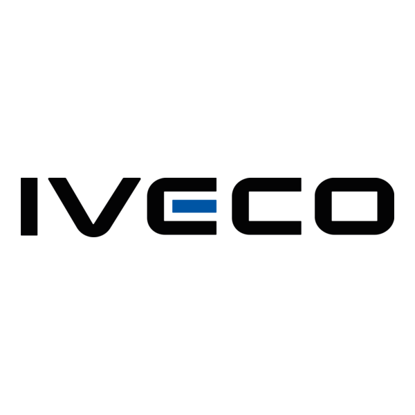

Our
Partners
TATA
Tata Motors is an Indian multinational automotive manufacturing
company headquartered in Mumbai, India, and a key member of the
massive Tata Group. Known historically for creating the rugged
backbones of developing economies. Tata has rapidly modernized its
lineup,
combining its legendary durability with world-class safety features
and advanced
powertrains to serve global markets across Asia, Africa, and South
America.
Iveco

IVECO is a premier Italian commercial vehicle manufacturer
headquartered in Turin, Italy. Controlled by the Iveco Group,
it is one of the world's most versatile transport giants,
renowned for its extensive lineup that spans light city vans,
rugged construction trucks, and heavy-duty highway haulers.
Scania
Scania is a premium Swedish automotive manufacturer founded in 1891
that has earned a legendary reputation as the "King of the Road" in
the
heavy transport industry. Now operating as a subsidiary of the
Volkswagen Group’s
Traton division, the company specializes in manufacturing
high-performance
heavy-duty trucks, buses, and robust industrial or marine engines.
Scania is particularly revered by drivers and fleet operators for its
iconic,
powerful V8 engines, exceptional cabin comfort, and premium build
quality.
Renault Trucks

Renault Trucks is a French commercial vehicle manufacturer
headquartered
in Lyon, France. Since 2001, it has been an integral partof the Volvo
Group,
allowing it to share robust corporate platforms while maintaining its
unique,
distinctly French design philosophy. Renault Trucks is recognized for
practicality,
striking visual design, and excellent value for fleet operators.
Volvo
Volvo Trucks is a global truck manufacturer based in Gothenburg,
Sweden.
It is the flagship brand of the Volvo Group, which also owns Mack
Trucks,
Renault Trucks, and Nova Bus. Volvo is arguably the world leader in
commercial vehicle safety and active driver-assistance systems,
positioning itself as a highly progressive, forward-thinking brand.